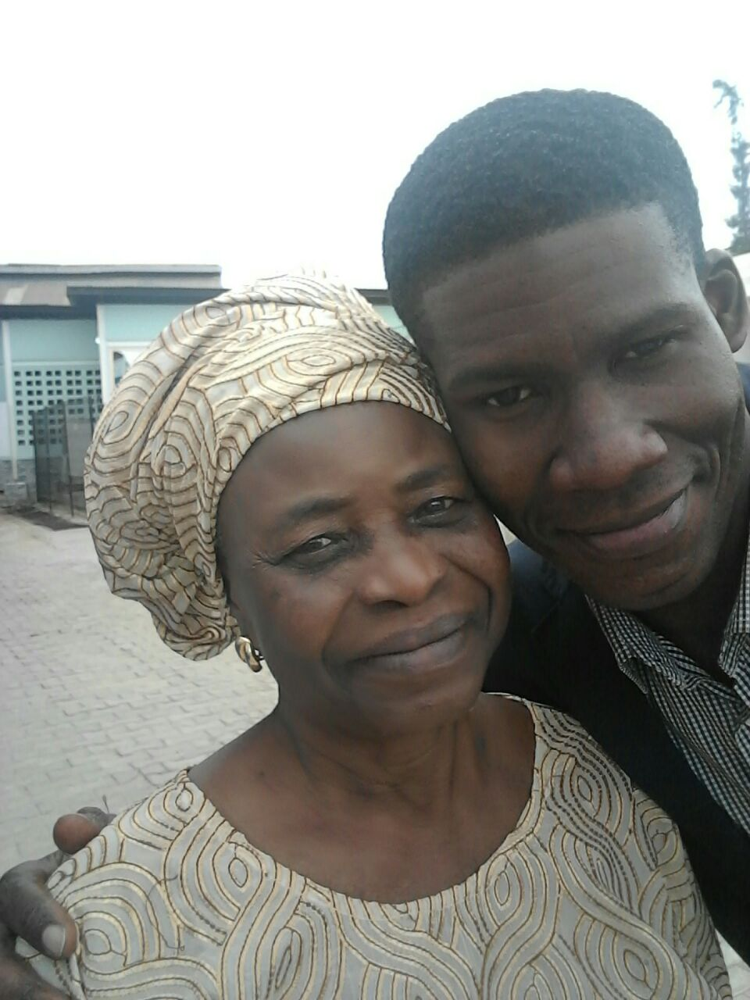

career
-
Seasoned employees
With open arms is looking for people with a heart and compassion to be part of our team, we are in need for team members who will help our clients live life to the fullest with happiness and confidence that they are in good hands. We are looking for people in the DMV area, who are good drivers and know the city very well.
If it is your calling to be a helping hAand and a life saver, join us and we can make history together my touch these special people one client at time.
-
Home and community based services
For our home and community service, we are looking for someone that will be able to help our clients under stand his or her chores and also take that client out to do leisure activities in the community. We have several places that our clients like to visit, the museums, parks and malls are some of these places. To perform qualify for this role, you have to have a good driver record and must pass drug test.
-
Relataled services specialists
With Open Arms is looking for related srevice specilatists like: Occupational therapist, Speech therapists, Social workers and Mental health psycologists.
This specialists will be conduct home visits and our clients can also come down to your offices for sessions. This will be only consult services.
To apply for a job at With Open Arms, you can send an email to johnson Adigun at johnsonoadigun@gmail.com or call: 630-78-8901.